FMCW Radar
Бесконтактная диагностика, мониторинг ритмических процессов, оценка параметров и архитектуры диагностических систем.
TXRXFFTfeatures
Магистрант 12.04.04 «Биотехнические системы и технологии» • бакалавр с отличием • призёр Всероссийского конкурса ВКР
Исследовательский профиль на стыке FMCW-радиолокации, цифровой обработки биосигналов, ЭЭГ, медицинской электроники и ультразвуковых биотехнических систем.
Основной интерес — измерить слабый физический или физиологический процесс, извлечь из сигнала структуру и превратить её в инженерно полезную модель.
Бесконтактная диагностика, мониторинг ритмических процессов, оценка параметров и архитектуры диагностических систем.
Спектральный и временно-частотный анализ, фильтрация, выделение признаков, ЭЭГ и другие биомедицинские сигналы; Python/MNE и методы классификации.
Математические модели пузырьковой динамики, медицинские применения ультразвука, верификация моделей и экспериментальные стенды.
Медицинская электроника, датчики, аналоговый тракт, цифровая обработка и прототипирование измерительных систем.
Не только темы интереса, а конкретные учебные и исследовательские траектории.
Инженерная линия от курсового проекта до ВКР: 4–6 беспроводных модулей поверхностной ЭМГ, BluetoothLE/NRF52832, проектирование печатной платы, корпуса и обработка сигналов.
Большой исследовательский отчёт по теории кавитации, медицинским применениям и облику экспериментального стенда; переход к CFD-моделированию и валидации.
Исследовательская практика на кафедре ОРТ: обработка экспериментальных ЭЭГ-данных, режекторная фильтрация, спектральная плотность мощности, Python/MNE и разбор SVM-подхода к классификации.
ООО «АУРУМ»: техническая документация, подбор оборудования, выезды с инженерами на приёмку и ввод в эксплуатацию рентгеновских, эндоскопических и физиотерапевтических систем.
Типовой расчёт по курсу «Специальные вопросы биофизики»: математическая модель ЯМР-сигнала, уравнения Блоха, расчёт резонансных пиков и влияния температуры.
Разбор Empirical Mode Decomposition для нестационарных сигналов: алгоритм выделения IMF, программная реализация, тестовый сигнал и оценка ошибки восстановления.
Итоговая работа по профессиональной переподготовке: технологическая карта, содержание и иллюстративные материалы для инженерного занятия.
Шесть материалов из загруженных работ: оригинальные схемы, результаты расчётов, изображения и фотография из отчёта по практике. Для каждого указан первоисточник и страницы PDF.
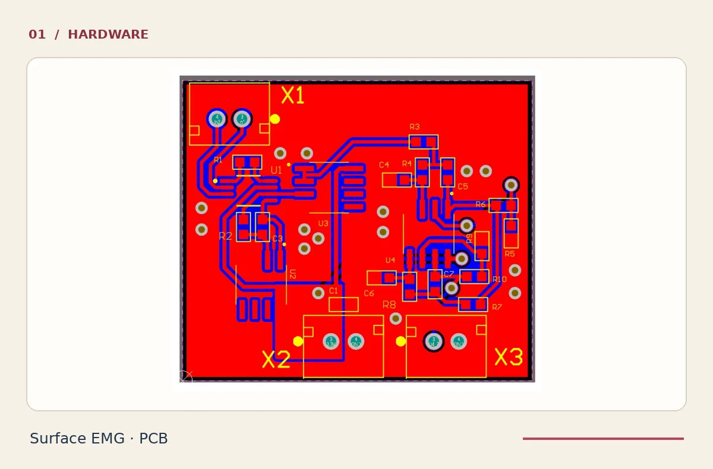
Проект трассировки платы датчика пЭМГ и электрическая схема из курсовой работы. Также приложена 3D-модель корпуса — это чертежи, а не фотографии изготовленного устройства.
КП_КолесникНА.pdf · стр. 14, 18–19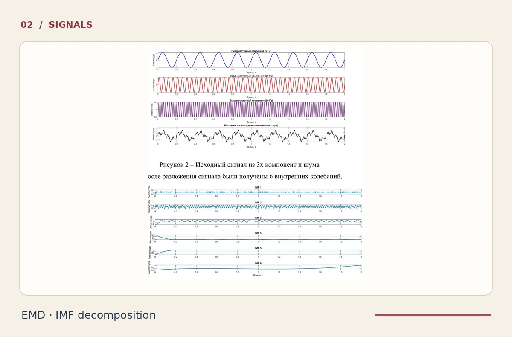
Тестовый сигнал из трёх гармоник с шумом, графики выделенных IMF, сравнение с восстановленным сигналом и листинг алгоритма в MATLAB.
EMD_Колесник_МОБС_реферат_.pdf · стр. 7–9, 12–15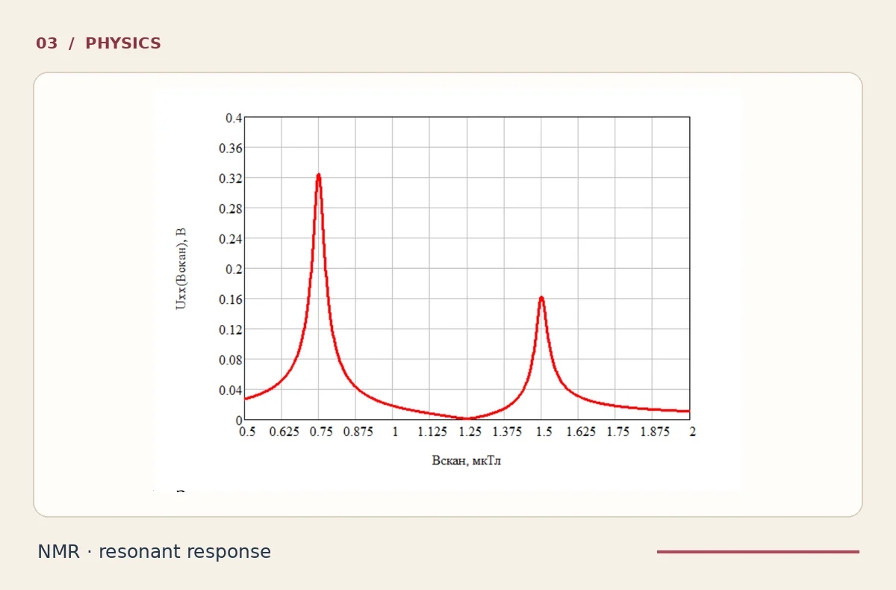
Расчёт зависимости сигнала катушки от сканирующего магнитного поля с двумя резонансными пиками. Модель и расчёт приведены в учебной работе по биофизике.
ТР_ЭР-17-21_КолесникНА.pdf · стр. 8–12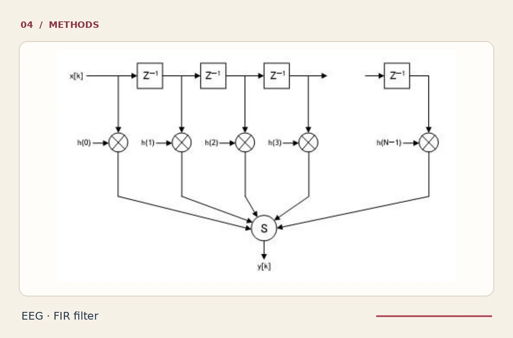
Схема КИХ-фильтра из отчёта по исследовательской практике; раздел об использовании MNE-Python и фильтрации, без исходных записей пациентов.
КолесникНА__отчёт_о_практике.pdf · стр. 14–15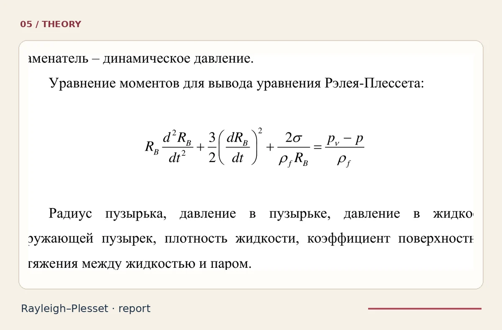
Формулы Рэлея–Плессета и обзор CFD-моделей из конспекта-отчёта по НИР. Это аналитический обзор научных источников, а не результаты собственного CFD-эксперимента.
Кавитация_отчет_01_10_2025.pdf · стр. 41, 48–50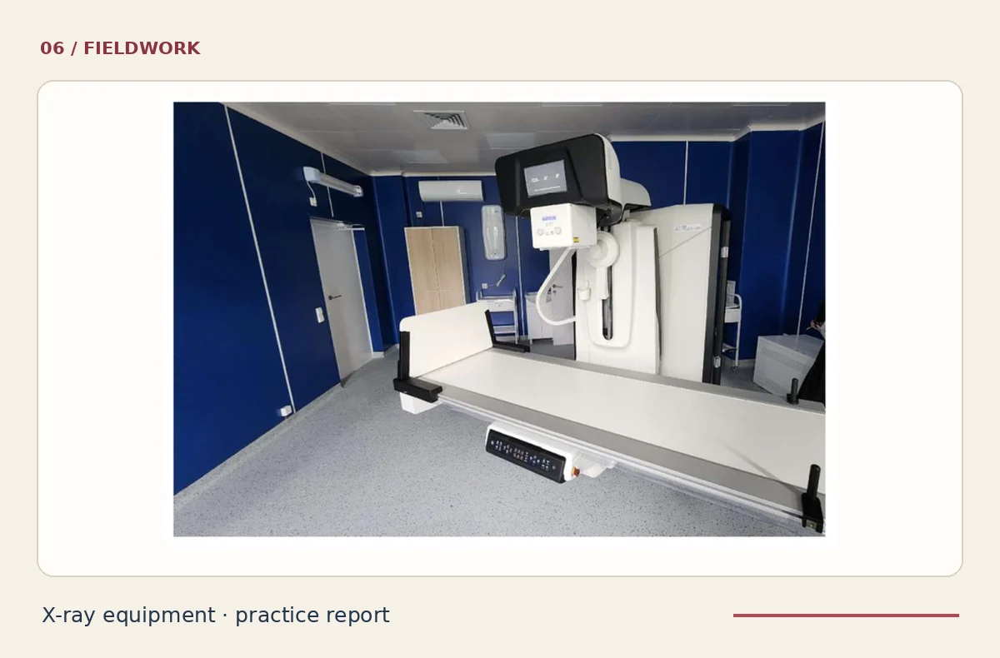
Фотография рентгенодиагностической установки Р-600 «Полидиагност» из приложения отчёта по практике. В отчёте также описаны приёмка оборудования и техническая документация. Автор фотографии не установлен.
КолесникНА__отчёт_о_практике(1).pdf · стр. 5–7, 16Публикуются отобранные фрагменты исходных учебных работ, а не новые изображения или результаты. Чертежи, расчёты и фотографии подписаны отдельно; документы не подтверждают изготовление серийных устройств.
Внешние подтверждения качества инженерной работы и расширения профессиональной подготовки.
30-й Всероссийский конкурс выпускных квалификационных работ по укрупнённой группе 12.00.00, направление 12.03.04 «Биотехнические системы и технологии».
Призовая инженерная ВКР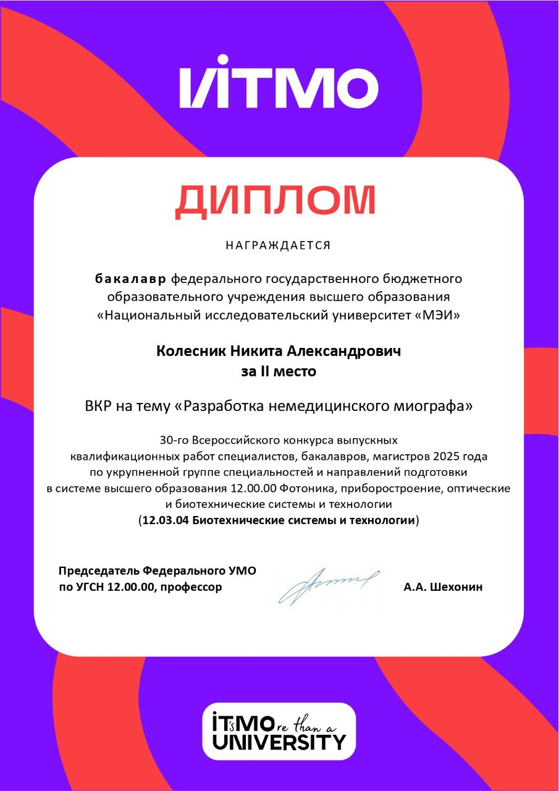
Командная награда на VI Фестивале радиоэлектроники. Имя Никиты указано в дипломе среди участников. Это именно командное второе место.
Командная работа · ПЛИС · радиоэлектроника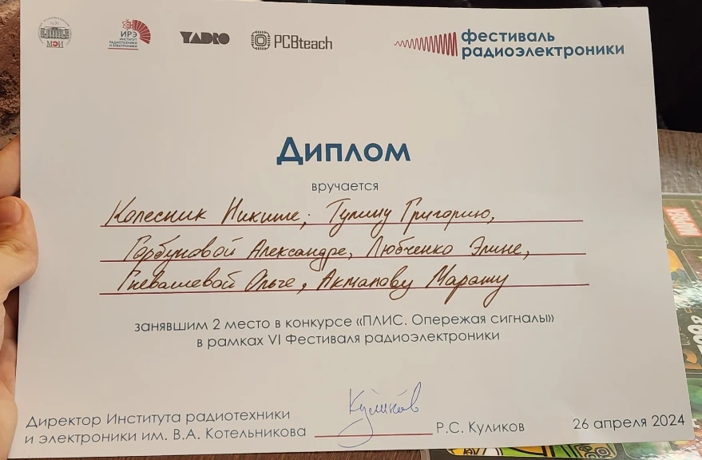
Официальный статус утверждён приказом НИУ «МЭИ» № 631 по итогам заключительного этапа олимпиады 2025 года.
Python • алгоритмы маршрутизации • робототехникаПовышение квалификации объёмом 68 академических часов, 11 ноября — 22 декабря 2025 года.
68 academic hours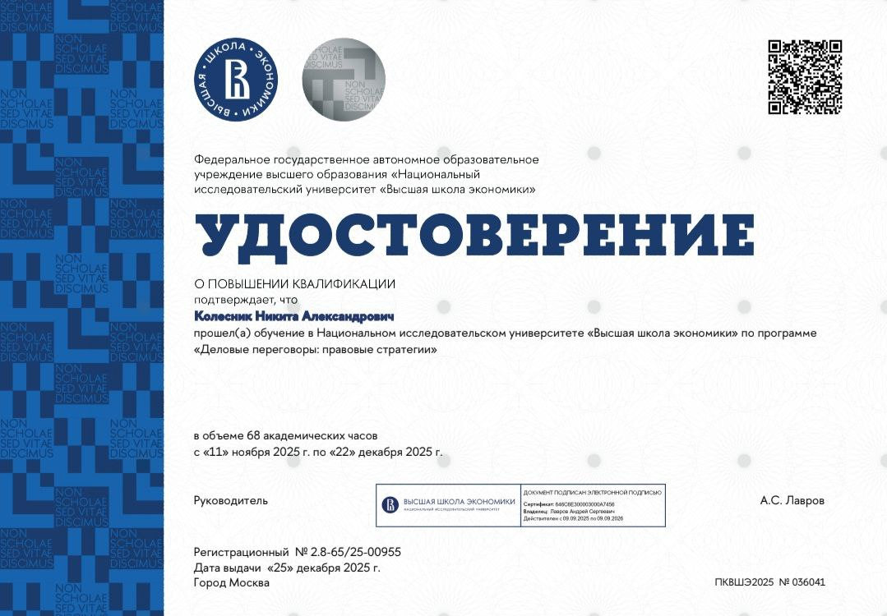
Публично подтверждённые результаты отделены от работ, которые ещё находятся в развитии.
XXXII Международная научно-техническая конференция студентов и аспирантов «Радиоэлектроника, электротехника и энергетика», НИУ МЭИ. Научный руководитель — Д. А. Балакин.
Открыть сборник ↗Рабочая исследовательская линия: от классической пузырьковой динамики к CFD-подходам, верификации и задачам ультразвукового тромболизиса.
Технический фундамент дополняется программированием и педагогикой — это даёт профиль человека, который может и строить системы, и объяснять их.
12.03.04 «Биотехнические системы и технологии»
Профиль: биотехнические и медицинские аппараты и системы.
12.04.04 «Биотехнические системы и технологии»
Исследовательская работа на кафедре основ радиотехники.
НИУ «МЭИ», программа «Педагогика и психология в профессиональной деятельности». 01.10.2025–23.12.2025. Квалификация «Преподаватель-ассистент».
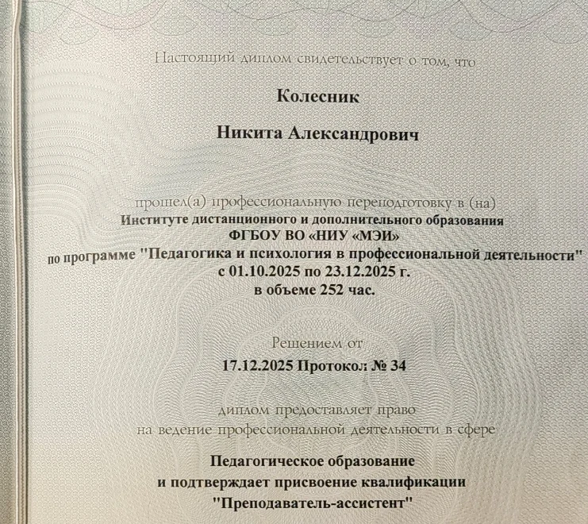
Фрагмент фотографии диплома. Регистрационные данные и подписи не публикуются.
15 академических часов, 25–29 августа 2025.
Повышение квалификации «Деловые переговоры: правовые стратегии», 68 академических часов.
Курс объёмом 2 зачётные единицы: физические основы МРТ, формирование изображений, аппаратура, обработка данных и применение ИИ.
НИУ «МЭИ», программа «Алгоритмизация и разработка программ для предприятий ТЭК». 04.10.2024–04.07.2025. Квалификация «Программист».
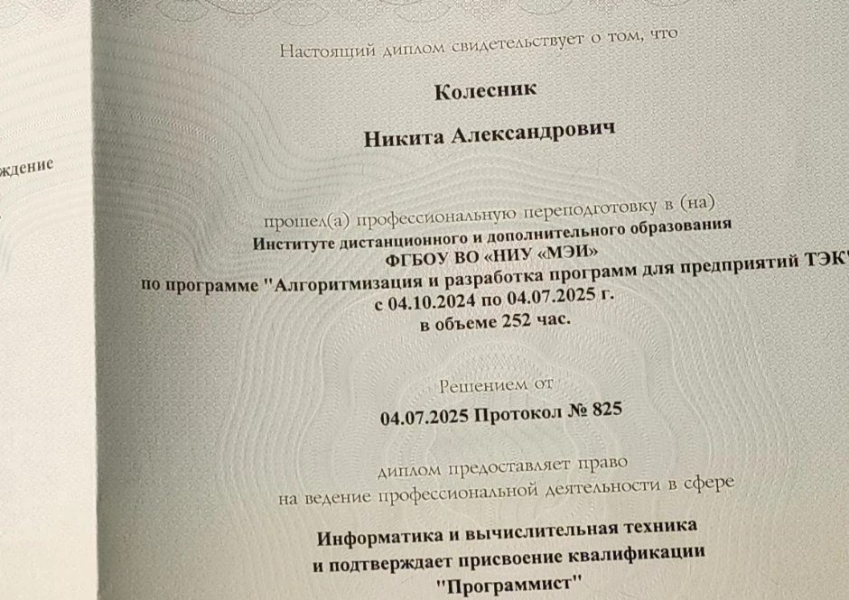
Фрагмент фотографии диплома. Регистрационные данные и подписи не публикуются.
Технические навыки — опора; широкая междисциплинарность — способ видеть систему целиком.
«Интеллектуальные способности, трудовая дисциплина и потенциал к исследовательской работе».
“I recommend Nikita as a promising researcher.”
Люди, у которых я учился. Порядок соответствует подтверждённым учёным званиям; внутри групп — учёной степени и алфавиту.The people I have studied with. Grouped by verified academic titles, then by degree and alphabetically.
По этим фамилиям пока недостаточно сведений для уверенного указания полного ФИО, учёного звания и должности. Они сохранены без предположений.These surnames could not be reliably matched to full names, academic titles and positions; no details have been guessed.
Должность и учёное звание указаны отдельно: одно не подменяет другое. Сведения собраны по открытым страницам НИУ «МЭИ»; при изменении кадровых данных возможны обновления. Это личный список, а не официальный перечень преподавателей учебной группы.Academic titles and positions are shown separately. Information comes from public MPEI sources and may change over time. This is a personal list, not an official class roster.
Техническое ядро окружают физика и математика, медицина и биология, психология, история, философия, языки и литература. Общий мотив — понять сложную систему от физического сигнала до человека и культуры.
Для исследовательских проектов, конференций, инженерных задач и академического сотрудничества.
213 записей из личного каталога · символ отражает предполагаемую тему книги · наведи курсор или нажми «Пауза», чтобы прочитать213 entries from the personal catalog · icons indicate approximate themes · hover or select Pause to read